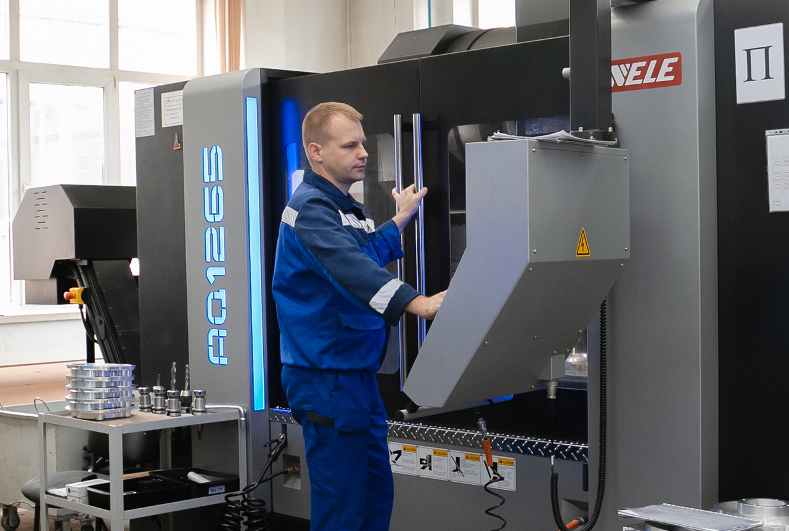
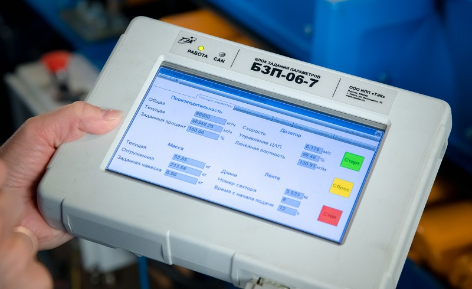

Томское предприятие в тренде цифровизации
Цифровизация
Как НПП ТЭК внедряет современные IT-решения для оптимизации бизнес-процессов и повышения эффективности производства.

«Томская Электронная Компания» внедрила около тридцати решений в сфере цифровизации бизнеса
Автоматизация
30 решений в сфере цифровизации бизнеса.

Softline и Microsoft заключили соглашение Enterprise Agreement с ООО НПП ТЭК
IT-управление
О сотрудничестве с ведущими IT-компаниями и преимуществах корпоративного лицензирования программного обеспечения.

НПП «Томская электронная компания» и «Утилекс АйТи» подводят итоги первого этапа внедрения ERP-системы
ERP-системы
Первый этап автоматизации процессов учета и планирования материальных ресурсов для разработки новых продуктов.